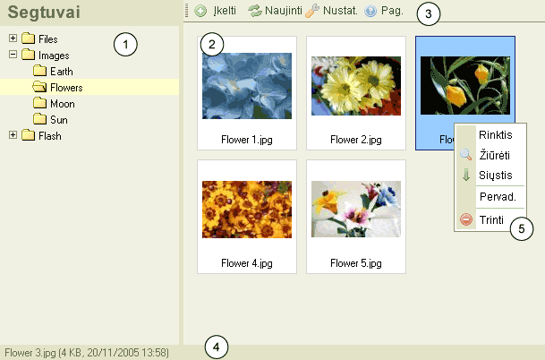

CKFinder vartotojo sąsaja
CKFinder sąsaja buvo sukurta paprastam, švariam, suprantamam ir paprastam valdymui.
Dauguma savybių yra valdomos keliais pelės paspaudimai ir per kontekstinius meniu.
Žemiau yra CKFinder atvaizdas:

- Segtuvų valdymas: susideda iš "išsišakojančio meniu" segtuvų
po kuriuos galima naršyti. Segtuvų pagalba yra lengviau organizuoti failus.
- Failų valdymas: rodomi visi failai esančiame segtuve.
- Įankių juosta: eilė mygtukų kuriuos nuspaudus yra įvykdomos
tam tikros funkcijos.
- Būsenos juosta: tai vieta kurioje rodoma informacija apie
pasirinktą failą, jų kiekis segtuve ir t.t
- Kontekstinis meniu: eilė mygtukų kurie gali būti naudojami paleisti
tam tikroms operacijoms pasirinktam objektui. Galimi pasirinkimai dinamiškai keičiasi
priklausomai nuo to, koks objektas pasirinktas.